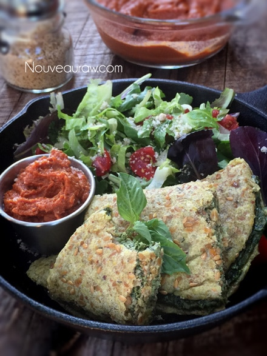
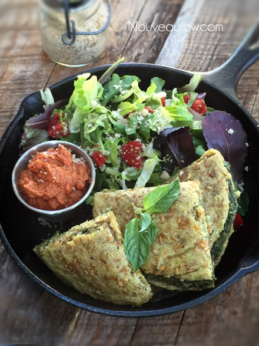

Spinach Basil “Cheese” Calzone
 ~ raw, vegan, gluten-free, nut-free ~
~ raw, vegan, gluten-free, nut-free ~
Ok, so this may not be your typical pizza calzone, but it is equally delicious. Calzones are folded pizzas, made from the same dough and stuffed with the same ingredients as pizza, folded over like an omelet. I have the same general concept, but instead of a pizza filling, I took a sunflower seed-based “cheese” and loaded it full of nutrient-rich greens like spinach and basil.
For my husband, there are every day “givens” that take place in the Nouveau Raw test kitchen (my kitchen)… first of all, any time he walks through the kitchen, I am always shoving a spoon in his mouth so he can taste test the latest creation. I go through a ton of spoons on any given day. :) Then there is the act of checking the dehydrator… I always call Bob into the pantry to see what I am dehydrating.
Today was no different; Bob was getting ready to head outside to work on a project when I asked him to see what I had in the dehydrator quickly. As soon as we hit the entrance to the pantry… the rich aromas were already luring us in. I popped off the front of the machine and pulled a tray out. Spinach Basil “Cheese” Calzones!
Without thought, he reached in to grab one but quickly withdrew his hand. “Oh!, you need pictures first, right?” I laughed at both his excitement of wanting one and then his thoughtfulness of knowing my routine. How could I possibly deny the man? “Go ahead, sweetie; you can try it.” He tore off the corner of one. “OMG, that is sooo good! Can I have more?” I granted him another bite… then another and another and another. Before I knew it, we polished off TWO of them as we stood almost eye-level to the machine. I told him we had to stop; otherwise, I wouldn’t have any to take pictures of. hehe
I have been creating a lot more recipes that are nut-free, and this is one of them. The bread almost has a buttery hint, which melds beautifully with the rich flavors of the “cheese,” which is fully nut-free too! They taste great cold, at room temperature, and warm, which is my favorite. Though I did notice that when I tried them cold, the flavors were a tad stronger/brighter. To add a little punch, I created a dipping sauce that brought in some acidity… we just loved it all. I hope you enjoy the recipe. Let me know what you think. amie sue
Bread dough: yields 6 pockets
- 2 cups buckwheat, soak & sprout
- 1 1/2 cups fresh organic corn
- 3/4 cup cold-pressed olive oil
- 1/2 cup flax seeds, soaked in 1 cup water
- 2 cloves garlic
- 2 tsp Himalayan pink salt
- 1 tsp ground cumin
- 1 tsp dried rosemary
- 1 tsp thyme or 1 Tbsp fresh
Spinach & “Cheese” filling: yields 4 cups
- 2 cups raw sunflower seeds, soak
- 1/2 cup + 2 Tbsp water
- 1/2 cup lemon juice
- 1/4 cup nutritional yeast
- 1 Tbsp raw chickpea miso
- 1 Tbsp raw coconut vinegar
- 1 1/2 Tbsp Italian Seasoning
- 3 small cloves garlic
- 1/2 tsp Himalayan pink salt
- 8 cups baby spinach
- 1/2 cup fresh basil
Sun-Dried Tomato Pesto: optional for dipping
- 2 cups diced, fresh tomatoes
- 1 cup sun-dried tomatoes
- 1/4 cup water
- 3 Tbsp cold-pressed olive oil
- 1 Tbsp raw coconut vinegar
- 2 tsp balsamic vinegar
- 2 tsp dried oregano
- 1 tsp raw agave nectar
- 1 small garlic clove
- 10 large basil leaves
Preparation:
Bread dough:
- This amount of dough yields 10 (1/2 cup) 6 1/2″ circular breads.
- The night before, I soaked the buckwheat, flax seeds, and corn in three separate bowls. Soaking the corn helps to soften the kernels.
- You can take the buckwheat to the next nutritional level by sprouting it before continuing with the recipe. Be prepared to tack on a few extra days for prep work.
- When you are ready to use the buckwheat, drain and rinse the tarnation of out of them. It will take about 5 minutes. Make sure that the water runs clear, and you don’t detect any mucilage dripping from the mesh strainer.
- Strain the corn.
- In a food processor, fitted with the “S” blade, combine the buckwheat, corn, oil, flax, garlic, salt, cumin, rosemary, and thyme. Process until it reaches a dough-like consistency.
- On non-stick sheets that come with the dehydrator, spread 1/2 cup of batter into a 6 1/2″ circle.
- If you struggle with making perfect circles or question how big 6 1/2″ is… create a template.
- Using a black sharpie pen, I took the ring from my Springform pan and traced it onto a piece of paper. You want to use a marker of some sort so you can see it through the non-stick sheet.
- Slide the paper under the non-stick sheet and use this as a template. Move the sheet to all 4 corners as you make the wraps. Remove the paper when done and save it for your next creation!
- Option: sprinkle extra Italian seasoning on the surface of the wrap before drying.
- Dehydrate at 145 for 1 hour, then reduce the temp to 115 degrees (F) for a few hours, long enough to where they are done enough to turn over onto the mesh sheet and peel off the non-stick sheet. Continue to dry for another 3-4+ hours. Keep an eye on them and test their flexibility. They shouldn’t be tacky when touched and should remain flexible.
- Any leftover wraps should be wrapped individually, slid into a ziplock bag, and stored in the fridge for 5-7 days.

Spinach & “Cheese”:
- After soaking the sunflower seeds, drain and discard the soak water. Place the sunflower seeds in a high-powered blender.
- Soaking the sunflower seeds not only softens them for blending but also reduces the phytic acid, which will make digesting them better.
- If you already have soaked/dehydrated seeds, you don’t have to re-soak them unless you don’t have a high-powered blender, then I would soak them once more to soften them for blending purposes.
- Add the water, lemon, nutritional yeast, miso, seasoning, garlic, and salt. Blend until creamy — place in a large mixing bowl.
- If you own a Vitamix, you will want to use the tamper to help push the ingredients into the blades.
- If you don’t own a high-powered blender, you will need to stop the machine often to scrape the sides, pushing the mixture into the blades.
- In a food processor, fitted with an “S” blade, process the spinach and basil in two batches, pulsing it to break down but not purée it. Add to the bowl with the sunflower cheese and mix well.
Assembly:
- Place a flatbread in front of you. If the edges dried a bit too much, dip your finger in water and moisten the sides, so they don’t crack.
- Place 1/4 – 1/2 cup worth of filling on half of the flatbread, taking it up to the edge.
- Fold the bread in half… gently! If any sections of the bread form small crackers or tears, smooth them over with a damp finger. Don’t worry about them needing to look perfect. If the filling oozes out a bit, it gives it that yummy rustic look.
- Place the flatbread on the mesh sheet and slid back into the dehydrator at 115 degrees (F) for 2-4 hours.
- They can be eaten right away, but the drying/warming process developed all the rich flavors in the pocket.
- Store leftovers in the fridge wrapped individually, so they don’t stick to one another.
- You can warm leftovers by placing them back in the dehydrator at 145 degrees (F) for about 1 hour. The length of time depends on how crunchy you want the bread to become. I love it when the edges are harder and full of texture.
Sun-Dried Tomato Pesto
- I used sun-dried tomatoes that were not soaked in oil. If you don’t have a high-powered blender such as a Vitamix or Blendtec, I recommend re-hydrating the dried tomatoes in enough water to cover them. Let them sit for about 15 minutes or until soft.
- Drain the excess water from them when ready to use.
- You can use the soak water in place of the plain water.
- Place the tomatoes, water, olive oil, vinegar, oregano, agave, garlic, and basil leaves, blending until smooth.
- You can hold off on the agave, taste testing to see if it is needed or desired.
- Store leftovers in the fridge for 2-3 days.
The Institute of Culinary Ingredients™
- If you are new to using Nutritional Yeast, click (here).
- What is Himalayan pink salt, and does it matter? Click (here) to read more about it.
- What is miso? Click (here) to learn more about it.
Culinary Explanations:
- Why do I start the dehydrator at 145 degrees (F)? Click (here) to learn the reason behind this.
- When working with fresh ingredients, it is essential to taste test as you build a recipe. Learn why (here).
- Don’t own a dehydrator? Learn how to use your oven (here). I do, however, honestly believe that it is a worthwhile investment. Click (here) to learn what I use.

© AmieSue.com